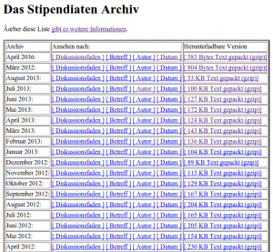

All mailing lists I use are GNU Mailman lists. This software provides archives of all Emails that were send over the list.
They look like this:
{kind=link}

Once in a while, I would like to search if a topic was already discussed. Here is how you can do it:
Download archives
wget --save-cookies cookie.txt --post-data 'username=user&password=pass' -A gz -m -p -E -k -K -np https://lists.abc.org/mailman/blub/
Rename archives
for file in *.txt.gz; do mv "$file" "${file%.txt.gz}.txt"; done
To make them sortable:
for file in *January.txt; do mv "$file" "${file%January.txt}01.txt"; done
for file in *February.txt; do mv "$file" "${file%February.txt}02.txt"; done
for file in *March.txt; do mv "$file" "${file%March.txt}03.txt"; done
for file in *April.txt; do mv "$file" "${file%January.txt}04.txt"; done
for file in *May.txt; do mv "$file" "${file%May.txt}05.txt"; done
for file in *June.txt; do mv "$file" "${file%June.txt}06.txt"; done
for file in *July.txt; do mv "$file" "${file%July.txt}07.txt"; done
for file in *August.txt; do mv "$file" "${file%August.txt}08.txt"; done
for file in *September.txt; do mv "$file" "${file%September.txt}09.txt"; done
for file in *October.txt; do mv "$file" "${file%October.txt}10.txt"; done
for file in *November.txt; do mv "$file" "${file%November.txt}11.txt"; done
for file in *December.txt; do mv "$file" "${file%December.txt}12.txt"; done
Analyze them
To analyze the archives properly, you should perhaps first import all emails in
a relational database. But with grep you could also do simple
keyword searches.